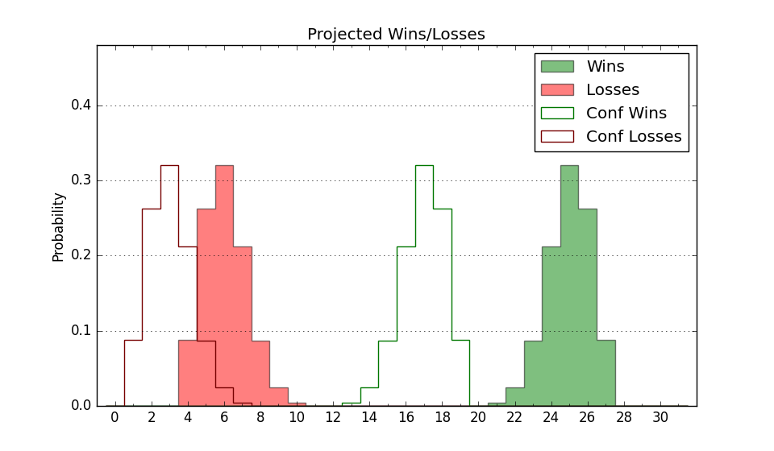

| Home | Game Probabilities | Conferences | Preseason Predictions | Odds Charts | NCAA Tournament |
| City: | Houston, Texas | |
| Conference: | Big 12 (1st)
| |
| Record: | 10-1 (Conf) 18-4 (Overall) | |
| Ratings: | Comp.: 39.1 (3rd) Net: 39.2 (3rd) Off: 124.1 (10th) Def: 84.9 (2nd) SoR: 89.6 (8th) |
| Remaining | ||||||
|---|---|---|---|---|---|---|
| Date | Opponent | Win Prob | Pred. | |||
| 2/8 | @ Colorado (100) | 92.7% | W 72-56 | |||
| 2/10 | Baylor (17) | 86.5% | W 72-61 | |||
| 2/15 | @ Arizona (7) | 55.8% | W 70-68 | |||
| 2/18 | @ Arizona St. (57) | 84.8% | W 70-59 | |||
| 2/22 | Iowa St. (10) | 82.3% | W 71-61 | |||
| 2/24 | @ Texas Tech (8) | 55.8% | W 66-65 | |||
| 3/1 | Cincinnati (45) | 92.9% | W 69-53 | |||
| 3/3 | Kansas (11) | 83.2% | W 70-60 | |||
| 3/8 | @ Baylor (17) | 65.2% | W 68-64 | |||
| Previous | Game Score | |||||
| Date | Opponent | Win Prob | Result | Off | Def | Net |
| 11/4 | Jackson St. (294) | 99.7% | W 97-40 | 12.6 | 11.9 | 24.5 |
| 11/9 | (N) Auburn (1) | 38.9% | L 69-74 | -6.6 | -7.5 | -14.1 |
| 11/13 | Louisiana Lafayette (332) | 99.8% | W 91-45 | -8.6 | 10.4 | 1.8 |
| 11/22 | Hofstra (194) | 99.1% | W 80-44 | 4.3 | 6.2 | 10.5 |
| 11/26 | (N) Alabama (5) | 62.6% | L 80-85 | -15.0 | -5.1 | -20.1 |
| 11/28 | (N) Notre Dame (78) | 93.5% | W 65-54 | -16.8 | 1.8 | -15.1 |
| 11/30 | (N) San Diego St. (53) | 89.9% | L 70-73 | -4.4 | -25.0 | -29.4 |
| 12/7 | Butler (70) | 95.8% | W 79-51 | 7.5 | 7.1 | 14.6 |
| 12/10 | Troy (98) | 97.7% | W 62-42 | -7.5 | 7.1 | -0.4 |
| 12/18 | Toledo (204) | 99.2% | W 78-49 | -25.9 | 16.3 | -9.6 |
| 12/21 | Tex A&M Corpus Chris (154) | 98.7% | W 87-51 | 19.3 | -2.4 | 16.9 |
| 12/30 | @Oklahoma St. (104) | 93.2% | W 60-47 | -24.6 | 19.3 | -5.3 |
| 1/4 | BYU (31) | 90.7% | W 86-55 | 19.6 | 8.1 | 27.7 |
| 1/6 | TCU (81) | 96.5% | W 65-46 | -0.6 | 4.0 | 3.4 |
| 1/11 | @Kansas St. (71) | 87.0% | W 87-57 | 16.0 | 8.1 | 24.1 |
| 1/15 | West Virginia (42) | 92.4% | W 70-54 | 18.6 | -9.2 | 9.3 |
| 1/18 | @UCF (76) | 88.1% | W 69-68 | -8.8 | -5.7 | -14.5 |
| 1/22 | Utah (75) | 96.1% | W 70-36 | 0.4 | 26.4 | 26.8 |
| 1/25 | @Kansas (11) | 59.3% | W 92-86 | 15.7 | -7.2 | 8.4 |
| 1/29 | @West Virginia (42) | 78.2% | W 63-49 | 4.6 | 5.9 | 10.6 |
| 2/1 | Texas Tech (8) | 81.2% | L 81-82 | -2.2 | -20.6 | -22.8 |
| 2/4 | Oklahoma St. (104) | 97.9% | W 72-63 | -6.3 | -19.5 | -25.9 |
| Stats & Trends | |||||
|---|---|---|---|---|---|
| Current | Day | Week | Month | Season | |
| Composite | 39.1 | -0.1 | -2.1 | +1.1 | +4.1 |
| Comp Rank | 3 | -- | -1 | +1 | -1 |
| Net Efficiency | 39.2 | -0.1 | -2.3 | +0.7 | -- |
| Net Rank | 3 | -- | -1 | +1 | -- |
| Off Efficiency | 124.1 | -0.1 | -0.2 | +3.6 | -- |
| Off Rank | 10 | -1 | -2 | +10 | -- |
| Def Efficiency | 84.9 | -0.0 | -2.1 | -3.0 | -- |
| Def Rank | 2 | -- | -1 | -- | -- |
| SoS Rank | 25 | -- | -4 | +28 | -- |
| Exp. Wins | 25.0 | -0.0 | -1.2 | -0.6 | -1.0 |
| Exp. Conf Wins | 17.0 | -0.0 | -1.2 | -0.6 | +1.5 |
| Conf Champ Prob | 75.9 | -0.6 | -18.2 | +8.0 | +37.9 |

| Advanced Stats | ||
|---|---|---|
| Stat | Value | Rank |
| Off Eff FG % | 0.560 | 42 |
| Off Ast Ratio | 0.162 | 83 |
| Off ORB% | 0.416 | 4 |
| Off TO Rate | 0.109 | 4 |
| Off FT Ratio | 0.279 | 318 |
| Def Eff FG % | 0.419 | 6 |
| Def Ast Ratio | 0.116 | 21 |
| Def ORB% | 0.250 | 50 |
| Def TO Rate | 0.205 | 2 |
| Def FT Ratio | 0.333 | 184 |